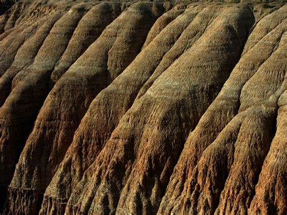
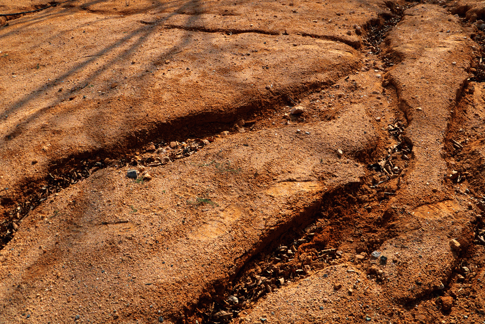
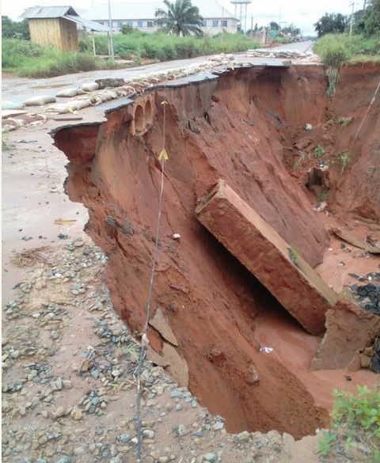
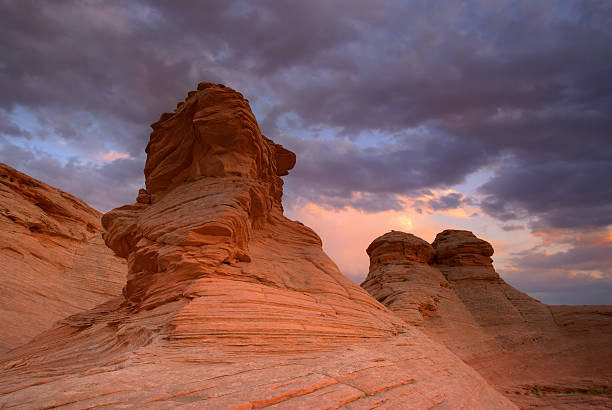
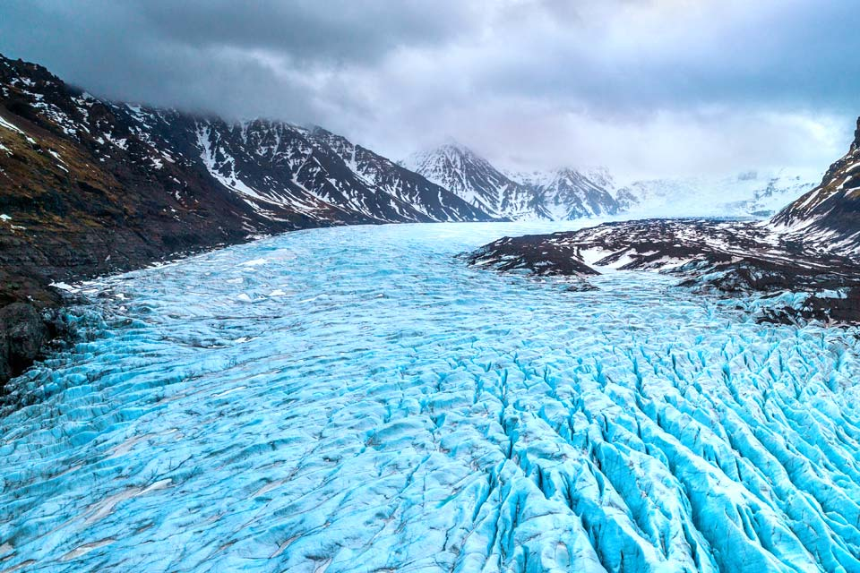
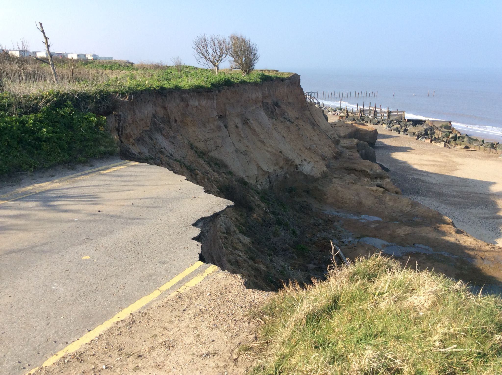
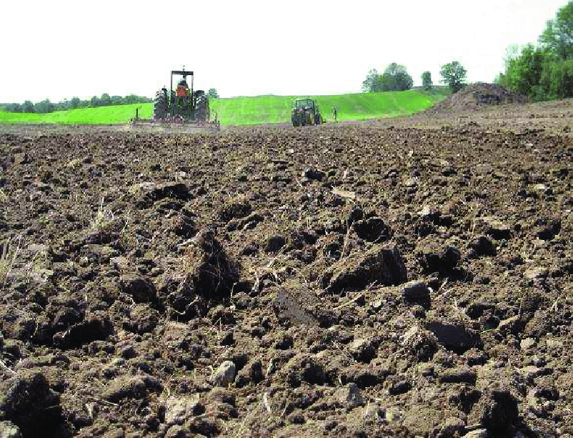
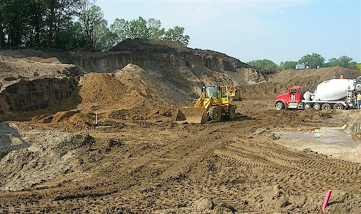
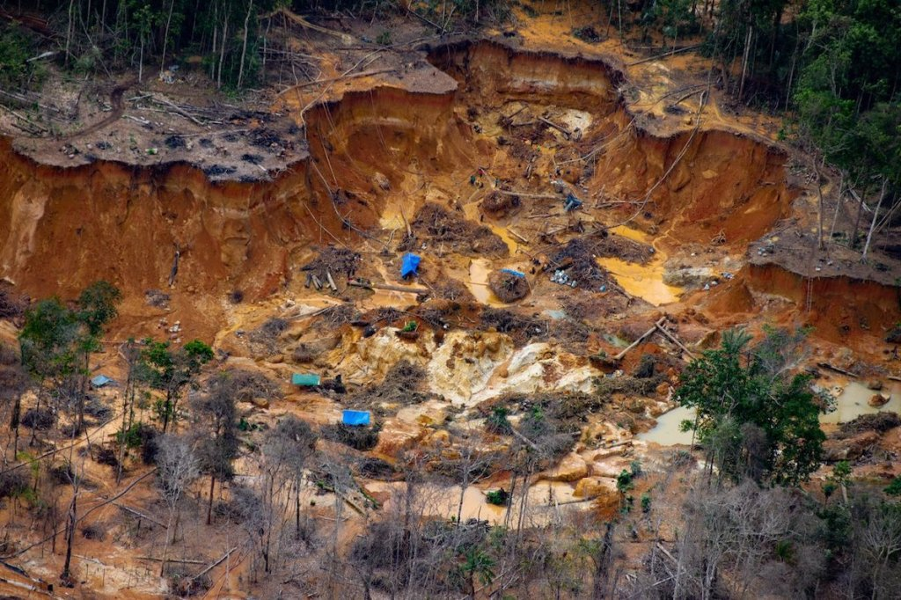
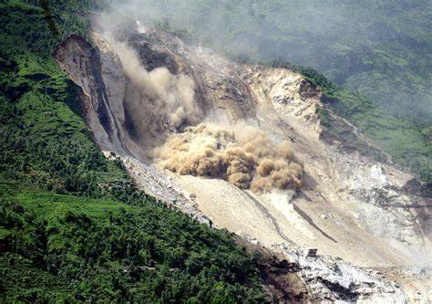

There are several different types of soil erosion, each categorized based on the specific mechanisms and factors that cause soil to be displaced. The main types of soil erosion are:
Water Erosion:

Sheet Erosion: Occurs when a thin, uniform layer of soil is removed by flowing water over a large area, often resulting from rainfall.
Rill Erosion: Involves the formation of small channels (rills) in the soil due to concentrated water flow, typically seen in agricultural fields.
Gully Erosion: More severe than rill erosion, this is characterized by the formation of deep and larger channels (gullies) in the landscape due to heavy water flow, often causing significant land degradation.
Wind Erosion:

Wind can carry away loose, dry, and unprotected soil particles, especially in arid or semi-arid regions, leading to the loss of topsoil and reduced soil fertility.
Glacial Erosion:

Glaciers can erode soil and rocks as they move, shaping landscapes through processes like abrasion, plucking, and bulldozing.
Coastal Erosion:

Occurs along coastlines due to the actions of waves, tides, and currents, which can wear away and reshape the land.
Erosion by Human Activities:

Tillage Erosion: Farming practices like plowing can disrupt the soil structure and lead to erosion. 
Construction Erosion: Urban development and construction can disturb soil and increase erosion rates. -

Mining Erosion: Mining activities often expose large areas of soil, making them highly susceptible to erosion.
Landslide Erosion:

Occurs when slopes fail and move downhill, carrying soil and rocks with them.